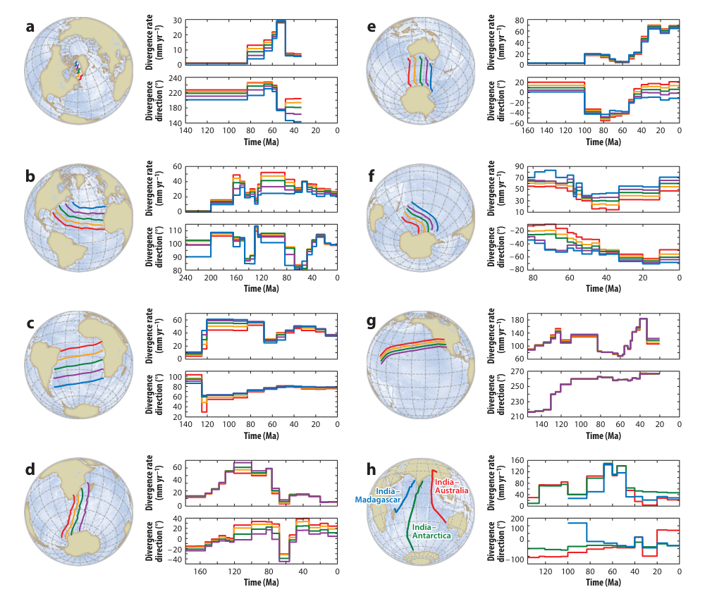
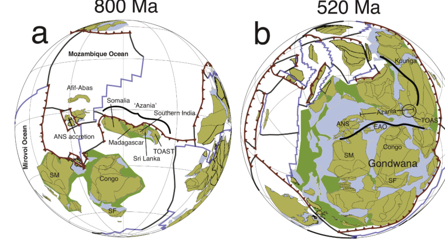
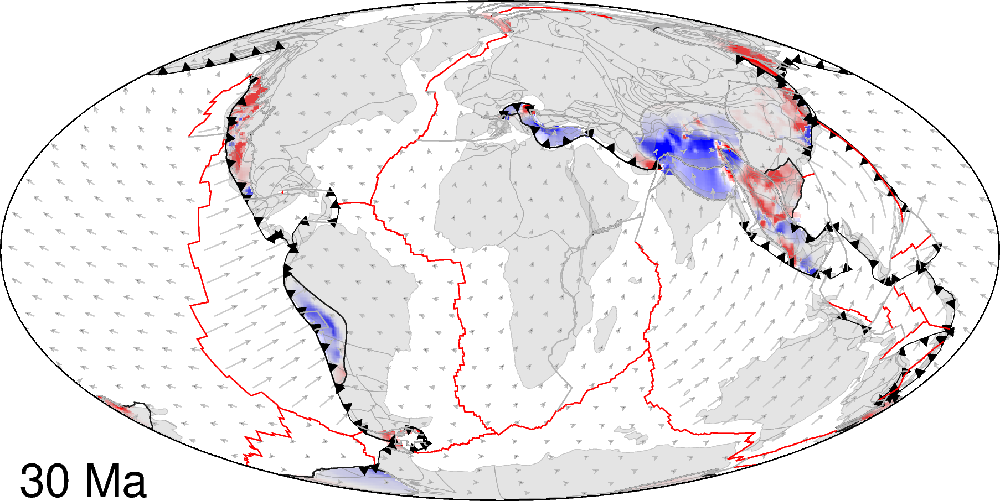

Müller et al. (2016, AREPS) pulled together decades of regional plate model work into the first internally consistent global model of every plate boundary spanning the last 200 Myr, built as a continuously evolving topological network rather than a fixed set of static polygons. Comparing rates and directions of separation across key plate pairs along representative tectonic flowlines (Figure 8) makes it possible to tell which changes in spreading behaviour are genuine global tectonic events, and which are just artefacts of individual regional models.

Figure 8, Müller et al. (2016).
Merdith et al. (2017, Gondwana Research) pushed a full-plate model back through the Neoproterozoic for the first time, linking the breakup of Rodinia to the assembly of Gondwana using geological constraints on individual terranes rather than paleomagnetic poles alone. Merdith et al. (2021, Earth-Science Reviews) then joined that Neoproterozoic model seamlessly onto the younger Phanerozoic plate model, producing the first continuous, self-consistent full-plate reconstruction spanning a billion years of Earth history. Figure 17, from the 2021 paper, shows how the Arabian-Nubian Shield and the Azania and TOAST terranes were progressively incorporated into Gondwana between 800 and 520 Ma.

Figure 17, Merdith et al. (2021).
Reconstructing seafloor age is straightforward where the ocean floor still exists, but most seafloor older than about 180 Myr has already been subducted. Williams et al. (2021, Geoscience Frontiers) built an efficient workflow for reconstructing that missing seafloor age structure within a full-plate model, and used it to explore a range of plausible age distributions in ocean basins that no longer exist. The animation below steps a resulting seafloor age grid forward through geological time, generated automatically from a topological plate reconstruction.

An automatically generated seafloor age grid stepping through geological time, from agegrid-0.1.
Treating every plate as perfectly rigid is a convenient simplification, but real continental margins stretch, rift and shorten. Müller et al. (2019, Tectonics) built the first global plate model to explicitly include that deformation, capturing the progressive extension of continental margins since rifting began within Pangea around 240 Ma, along with major failed rifts and zones of continental collision. The snapshot below, from 30 Ma, shows accumulated stretching (blue) and shortening (red) along plate boundaries and deforming continental interiors worldwide.

Deforming plate model at 30 Ma, Müller et al. (2019).